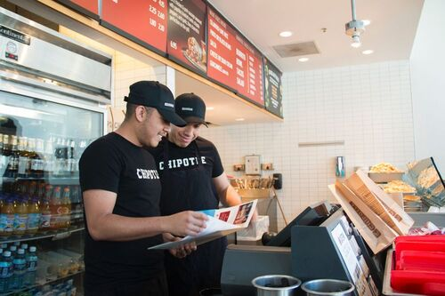

John Doe
Moms may seem powerless compared to heroes like Spider- Man, Batman, or any other superhero, but that isn't the case. Super heros dont exist and people need to start realizing that. Society has to begin appreciating the everyday heroes, such as my mom, Virginia Sandoval. She is the best mother to ever exist. If people were to see who my mom is on newspaper; people would find a change within their family homes, a positive one.
My Mom is a housewife. This doesn't make her lazy like the sexist community points housewives to be. If anything she works harder than anyone else. She is the parent to my brother, sister and myself. She cares for us, feeds us, and once in a while she even cloths us. She works from the second my dad gets up for work to the second that everyone in my family is in bed. Moms, similar to mine, clean, cook, wash, and sometimes even sow. My mom does all of that and more, but she does it all in a short amount of time. She’s like the fastest sweeper ever! She’s the best!
Virginia Sandoval is also a very generous women who does tasks for the benefits of others. She puts others above herself, even when it may seem impossible to do so. My mom, on the daily, puts her work aside to tend for her children. I can’t name the amount of times that my mom has stopped sweeping, mopping, cleaning, washing, and even cooking to take me out the gym or a meet up. She not only does this for me, but for my siblings as well. Some may argue that its an obligation to do so, but what they don't know is that what my mother provides for us, her children, are privileges. Not only that, but she also supports some our neighbors by doing them favors such as taking their kids to school and sharing the fruit she grows. My mother is like an angel.
My mother holds the perfect traits that every mother should contain. Care, something she never lacks. Love, something she shows even if it embarrases her children. Responsibility, something she has had since she was a young child. Commitment, something that she never goes back on. And humbleness, something a whole person should never lack.
Without my mom I don't know where my family and I would be. Recently, my mom was in a surgery, and my family and I have been struggling. We don’t know how to run the house. She has been teaching us how to do everything and is even helping out. I love my Mom, she is the best mother I could have asked for.
It’s not every that people with such immense power come across a boy that has nothing going for him. He can’t walk around school without thinking about what he’s going to do after his significant other has moved. It won’t be easy to say goodbye or see you later. He could continue to follow his plan of visiting colleges as he was supposed to. It was all part of the boys plan to find out where he’d get the degree meant to build his and his heart’s future. His parents neglected him; a middle kid story to be told came out of it. They don't really want much to do with him. With a top of the line older daughter and an all star younger son, who would care about this boy? Certainly not his parents. His school environment doesn’t help either. A sister who’s already gone through the rigor and has achieved the most difficult isn’t best for a boy like this. It’s not that his sister is wrong for accomplishing all her goals, but it is the teachers and students who criticize him for not being an exact copy of her. It's the boys parents who don’t support the boy because of their preoccupation with two geniuses. The only one who did is going to be gone for a long time in just a couple of weeks from now.
Food4Less Clerk
Chipotle Cook
• Cooked everything that was warm X
• Trained new employees
• Experience the grill, knives, and prepping
Cashier at Chipotle
• Responsible for checking out customers and parties
• got a lot of tips
AVID TUTOR
• Ran sessions to help students with their homework
• Reviewed and graded student work
• Created educational content to help promote student education and support
• TA'd for over 400 students each academic semester
Education
UC Riverside
University of California Riverside
University of California Riverside
Portfolio
